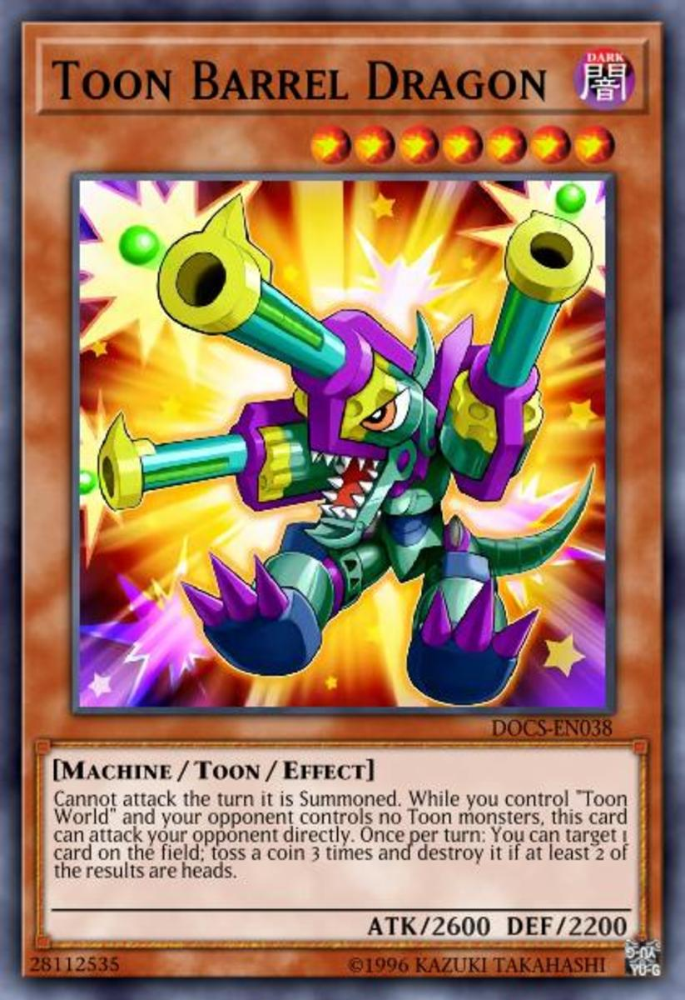

Were going to be talking about all the diffrent summoning methods and how to use each one correctly in a duel
There are 9 diffrent ways to summon cards they are???
Vinilla summoning is very basic if your monster is a vinilla monster it has no special abilitys and is the most under used monsters in yugioh for how weak they are.
Effect summoning is like vinilla summoning for the exception of effect monsters have abiltys while vinilla dose not.
Tribute summoning if a effect/vinilla monster has a level of 5-6 you only require 1 card as tribute which you would send to the graveyard but if the level of the monster is 7-12 you would have to make 2 cards go to the graveyard
Special summoning can only be done using ethier spells,traps or using an effect monster its like summoning a normal monster except you can summon another monster on the same turn
Fusion summoning First: You will need to have the required monsters on the card and a polymarazation in your hand. Secondly: You will have to use polymarazation to fusion summon the monster that you want.
Ritual summoning can only be done using a spell card and also by having all the required monsters in your hand so first. You will need to have the spell card for the ritual summon to commence. Second: You will need the required monsters on the card to proform the ritual summon. Thirdly: you will need to have the ritual monster in your hand to proform the summon.
You see a ritual monster dose not go into your extra deck it goes into your main deck so a lot of people will use cards to try and get their cards out quicker by using spells and traps.
Syncro summoning: First you will need the cards required on the card to syncro which ussually involves 1 tuner monster and 1 non tuner monster. Second: You will need them to all have the same level as your syncro monster then you will be able to syncro summon.
However you can use more then 1 non tuner monster to syncro summon
Xyz summoning: First: You will need 2 or more monsters with the same level as your XYZ monster. Second: You then overlay all the monsters required which is between 2/3 monsters and XYZ summon your monster.
Fun little fact the monster levels on an XYZ monster are known as ranks and not levels.
Pendulum summoning 1 First: You need to know about pendulum zones their are 2 on each side of the field if you put a pendulum monster with a rank of 1 and another on the other side with the rank of 12 you can summon monsters form level 2/11 without having to tribute summon. secondly: pendulum cards have 2 effects 1 is a spell effect and 2 is a normal effect if the monster is in the pendulum zone it then becomes a spell card if a pendulum card is normal summoned it then can use its normal effect.
With pendulum summoning you need to be very expirianced to summon it and use them correctly also not all pendulums have a normal effect you can have something called a vinilla pendulum which has no normal effect but still has a spell effect.
Pendulums can also be a syncro monster, fusion monster, Xyz monster and also a ritual monster also when any pendulums are destroyed they don't get sent to the graveyard they go back to your extra deck.
You have now learned all the summoning techniques in duel links so go out and have fun dueling.
Its not how you use the card its how you decide to play it.
-Zayne Truesdale